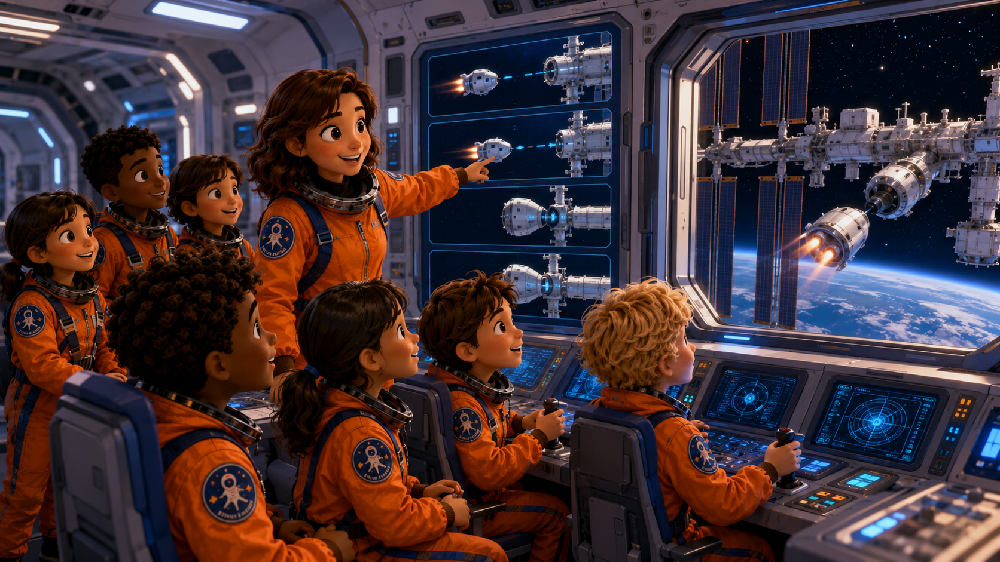

In Step 11, you learn about docking with the space station. Docking means approaching, aligning, and connecting safely. The crew must watch the distance and report the docking status clearly.
Step 11에서는 우주정거장과 도킹하는 과정을 배웁니다. 도킹은 안전하게 접근하고, 위치를 맞추고, 연결하는 것입니다. 대원은 거리와 상태를 확인하고 도킹 상태를 분명하게 보고해야 합니다.

Mission Preview: docking training
Before You Start
Read first. Approach the station tomorrow.
In Step 11, you learn that docking must be slow and careful.
The spacecraft cannot crash into the station.
It must approach, align, and connect safely.
Docking means approach, align, and connect safely.
Step 11에서는 도킹이 천천히 조심스럽게 이루어져야 한다는 것을 배웁니다.
우주선은 정거장에 부딪히면 안 됩니다.
안전하게 접근하고, 위치를 맞추고, 연결해야 합니다.
도킹은 접근하고, 위치를 맞추고, 안전하게 연결하는 것입니다.
Docking
What is docking?
Docking means connecting a spacecraft to a station.
It is not a fast crash.
It is a careful connection between two spacecraft parts.
도킹은 우주선을 정거장에 연결하는 것입니다.
빠르게 부딪히는 것이 아닙니다.
두 우주 장비가 조심스럽게 연결되는 과정입니다.
Approach
What is approach?
Approach means moving closer slowly.
The crew watches distance and speed.
A safe approach gives the team time to correct problems.
approach는 천천히 가까이 가는 것입니다.
대원은 거리와 속도를 확인합니다.
안전한 접근은 문제를 고칠 시간을 줍니다.
Alignment
What is alignment?
Alignment means matching position correctly.
The spacecraft must face the correct place.
Good alignment helps docking become stable.
alignment는 위치를 정확히 맞추는 것입니다.
우주선은 정확한 곳을 향해야 합니다.
좋은 정렬은 도킹을 안정적으로 만듭니다.
Contact and Capture
Contact and capture
Contact means the spacecraft touches the station.
Capture means the station safely holds and connects it.
The crew reports when docking is stable.
Docking has an order:
First, approach slowly.
Next, align the spacecraft.
Then, make contact.
Finally, capture and confirm stable docking.
contact는 우주선이 정거장에 닿는 것입니다.
capture는 정거장이 안전하게 붙잡아 연결하는 것입니다.
대원은 도킹이 안정적인지 보고합니다.
도킹에는 순서가 있습니다.
먼저 천천히 접근합니다.
다음에 우주선의 위치를 맞춥니다.
그 다음 닿습니다.
마지막으로 붙잡아 연결하고 안정적인 도킹을 확인합니다.
Mission Status
Normal, Warning, Emergency
Normal
The spacecraft approaches slowly.
Alignment is correct and docking is stable.
Mission Control, we are approaching the station. Alignment is good. Docking is stable. Over.
우주선이 천천히 접근합니다.
위치가 정확하고 도킹이 안정적입니다.
Warning
The spacecraft is drifting.
The crew reports before it becomes dangerous.
Mission Control, the spacecraft is drifting. Please advise. Over.
우주선이 옆으로 밀려나고 있습니다.
위험해지기 전에 대원이 보고합니다.
Emergency
Docking is not safe.
The crew must stop and wait for instructions.
Mission Control, docking is not safe. Please advise. Over.
도킹이 안전하지 않습니다.
대원은 멈추고 지시를 기다려야 합니다.
Mission Officer
Think Like a Docking Officer
A docking officer watches distance, checks alignment, confirms contact, and reports if the spacecraft drifts.
Docking Officer는 거리를 보고, 위치를 확인하고, 접촉을 확인하며, 우주선이 밀려나면 보고합니다.
Key Words
Words to know before Step 11
dockingconnecting a spacecraft to a station우주선을 정거장에 연결하는 것
stationa place where astronauts live and work in space우주에서 생활하고 일하는 정거장
approachmove closer slowly천천히 가까이 가다
alignmatch position correctly위치를 정확히 맞추다
distancehow far apart two things are두 물체 사이의 거리
contacttouching닿음
capturesafely holding and connecting안전하게 붙잡아 연결함
stablenot moving in a dangerous way위험하게 흔들리지 않는
driftslowly move away or sideways천천히 옆으로 밀려나다
collisioncrash or hit충돌
Check Your Understanding
Answer in short sentences
What is docking?
Why must docking be slow?
What does approach mean?
What does align mean?
What is capture?
What should the crew report if the spacecraft drifts?
도킹은 무엇인가요?
도킹은 왜 천천히 해야 하나요?
approach는 무슨 뜻인가요?
align은 무슨 뜻인가요?
capture는 무엇인가요?
우주선이 밀려나면 대원은 무엇을 보고해야 하나요?
Mission Report Goal
Tomorrow's report
Practice these reports before class. Say them slowly and clearly.
Normal Report: Mission Control, we are approaching the station. Alignment is good. Docking is stable. Over.
Problem Report: Mission Control, the spacecraft is drifting. Please advise. Over.
Emergency Report: Mission Control, docking is not safe. Please advise. Over.
정상 보고: 정거장에 접근 중이고 위치가 좋으며 도킹이 안정적입니다. 문제 보고: 우주선이 밀려나고 있어 지시를 요청합니다. 비상 보고: 도킹이 안전하지 않아 지시를 요청합니다.
Parent Homework Check
부모님 숙제 확인
After reading, please ask these short questions. A perfect answer is not the goal. Saying it again is the training.
학생이 글을 읽은 뒤, 아래 질문을 짧게 확인해 주세요. 완벽한 답보다 다시 말해 보는 연습이 중요합니다.
What is docking?도킹은 무엇인가요?한국어 도움: 우주선이 우주정거장에 안전하게 연결되는 것입니다.
Why must docking be slow?도킹은 왜 천천히 해야 하나요?한국어 도움: 정거장에 부딪히지 않고 안전하게 연결해야 하기 때문입니다.
What does align mean?align은 무슨 뜻인가요?한국어 도움: 위치를 정확히 맞춘다는 뜻입니다.
Can you say tomorrow's docking report?내일 말할 도킹 보고 문장을 말할 수 있나요?한국어 도움: 정상 보고 문장을 한 번 말해 보게 해 주세요.